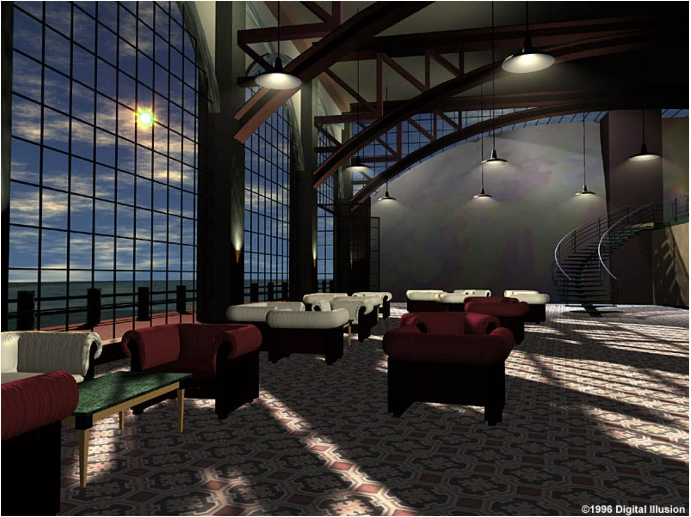
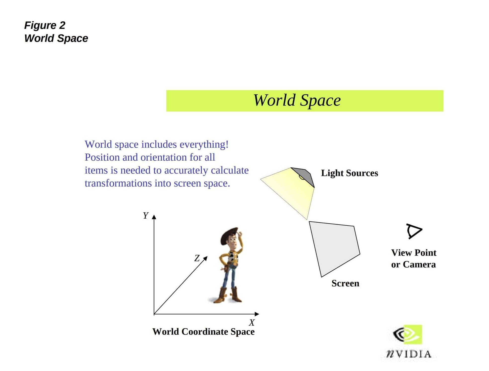

In fact the term GPU and 3D accelerator cards already existed long before the GeForce 256, but the one proposed by NVIDIA actually boasted features that represented such innovations that this card could really be defined as "the first in the world".
First and foremost, this GPU was the first to incorporate the normal functions of a video card and the 3D acceleration function into a single component, tasks that were previously entrusted to two separate cards.
The second was, the presence of the Transform and lighting Engine in a graphics card dedicated to the consumer market.
The question now is: what was this engine used for and why was it so important?
Lighting engine
The lighting function basically made it possible to adapt the colors of the represented scene according to the lighting information of the surfaces. As an example, thanks to the introduction of this technology, it became possible to render the shading of the elements of the scene, thus drastically increasing the perception of realistic images.

Scene with lighting effect: example render

Transform engine
The concept behind the Transform engine, on the other hand, is more complicated and technical and here is an in-depth explanation from an official NVIDIA Technical Brief on the subject of Transform and lighting:
"The process of describing and displaying 3D graphics objects and environments is complex. To reduce this complexity, it is useful to describe the 3D data according to different frames of reference, or different coordinate systems, at different times. These different frames of reference are referred to as “spaces” such as world space, eye space and screen space. Each of these is spaces is convenient for one or more operations that must be performed as a 3D image is created. World space is used for holding all of the 3D objects that are part of the 3D world. Eye space is used for lighting and culling and screen space is used for storing the scene in the graphics frame buffer. However, because these spaces use different coordinate systems, 3D data must be converted or “transformed” from one space to another as it moves through the 3D pipeline. The transform engine performs all of these mathematical transformations."
Wanting to summarize it all in a much simpler way the purpose of this component is to generate a two-dimensional view starting from data of a three-dimensional scene in order to facilitate the processing of data necessary for the generation of the final 3D image.
The reason why the introduction of the transform and lighting (T&L) engine hardware has been so important is the performance increase it has made possible on computers. Previously T&L operations were entrusted to CPUs but this was not very suitable for this kind of graphic operations.
The introduction of this technology by NVIDIA has thus allowed to drastically increase the efficiency of computers leaving the GPU the task of processing graphics operations and at the same time the CPU time to perform all other types of calculations.